flowchart LR
A["What you must<br>measure"] --> B["The accuracy<br>that requires"]
B --> C["GSD:<br>0.5 to 1.0 x that"]
C --> D["Flying height<br>(Topic 3A)"]
Center for Geospatial Analytics at North Carolina State University
A worked example from the ASPRS standard (American Society for Photogrammetry and Remote Sensing 2024):
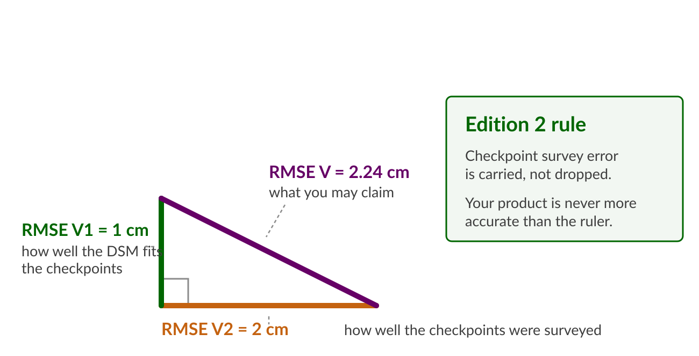
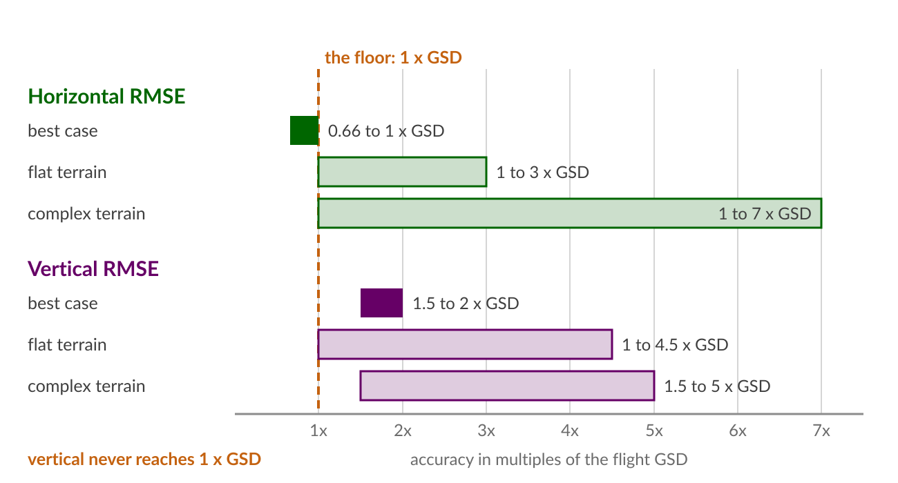
flowchart LR
A["What you must<br>measure"] --> B["The accuracy<br>that requires"]
B --> C["GSD:<br>0.5 to 1.0 x that"]
C --> D["Flying height<br>(Topic 3A)"]
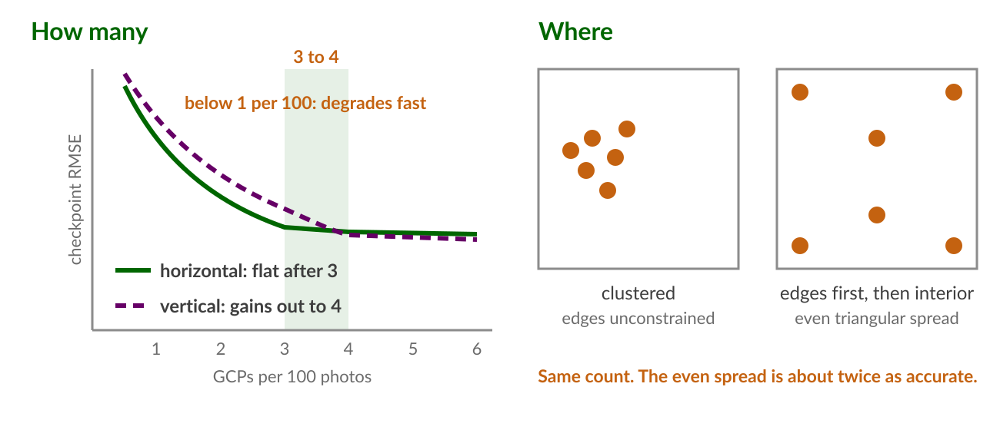
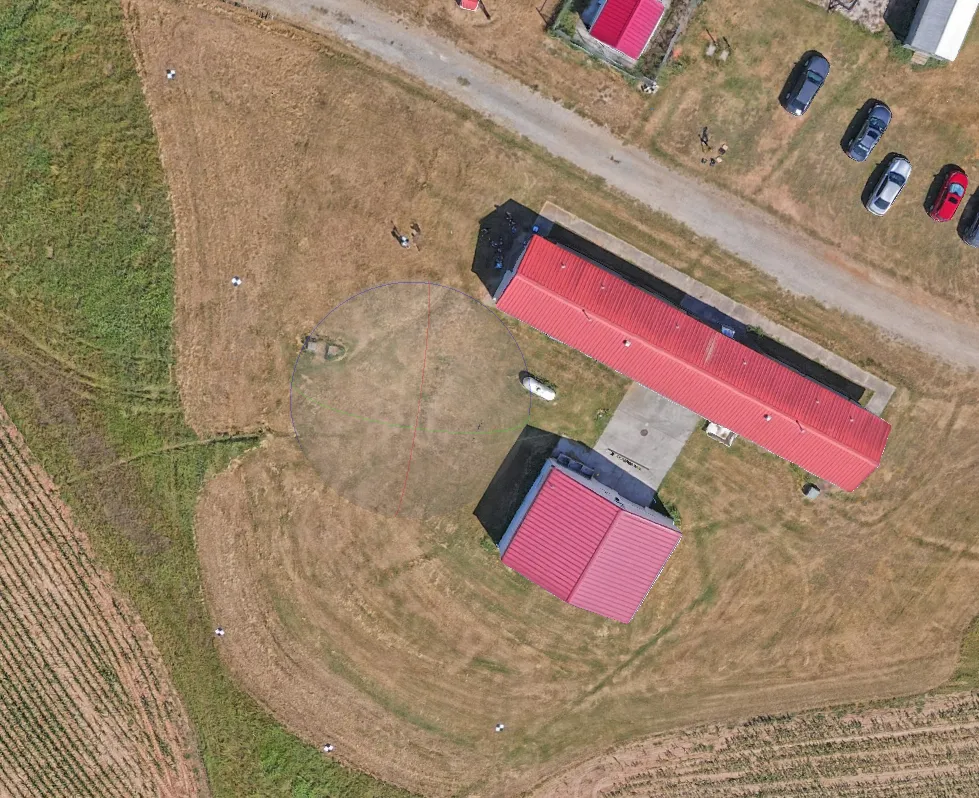
Our own flight. Targets ring the site: a few become control, the rest stay checkpoints.
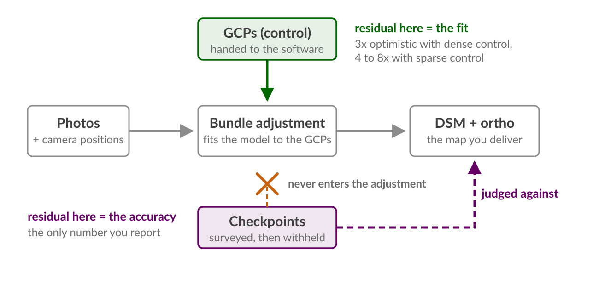
| Evidence | Result |
|---|---|
| ASPRS Addendum V (American Society for Photogrammetry and Remote Sensing 2024) | PPK reaches 1 to 2 cm horizontal, 2 to 4 cm vertical “when used properly”; RTK typically 5 to 10 cm |
| RTK aircraft, zero GCPs, purpose-built flight (Stott et al. 2020) | Vertical RMSE 6.6 cm over 2 km of river; adding 5 GCPs did not improve it |
| PPK versus GCP workflows (Zhang et al. 2019) | PPK matched GCP-workflow accuracy (MAE about 2 cm, RMSE about 3 cm); some missions carried a vertical bias that one GCP removed, improving vertical accuracy 20 to 30 percent |
| Repeat surveys (Nota et al. 2022) | Co-alignment of epochs gives sub-2 cm relative accuracy; ground control in at least one epoch still anchors absolute Z |
Working defaults: RTK or PPK for georeferencing, 1 or 2 GCPs to control the vertical datum, every other surveyed point withheld as a checkpoint
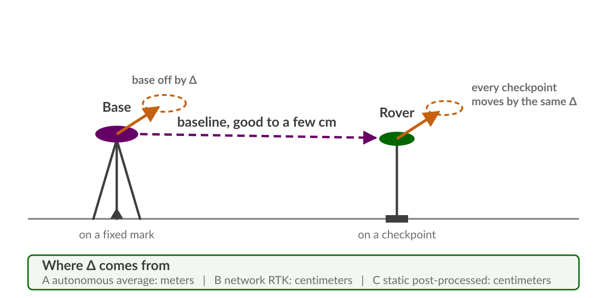
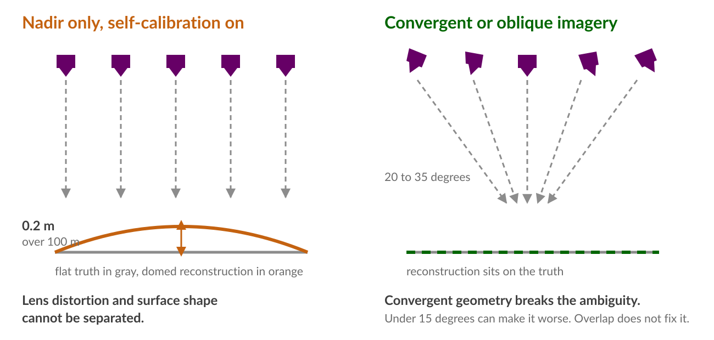
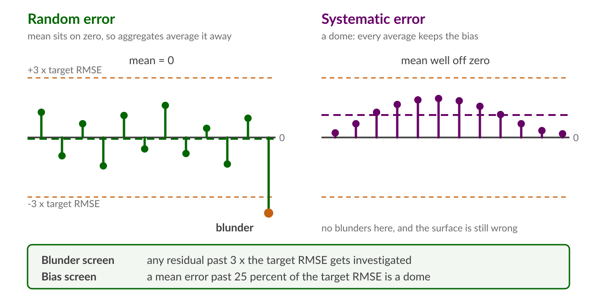
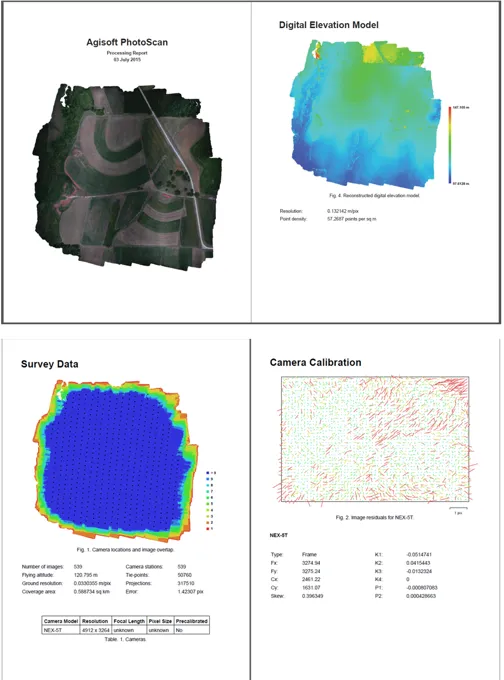
Survey overview, DEM, survey data with the overlap figure, camera calibration with residuals.
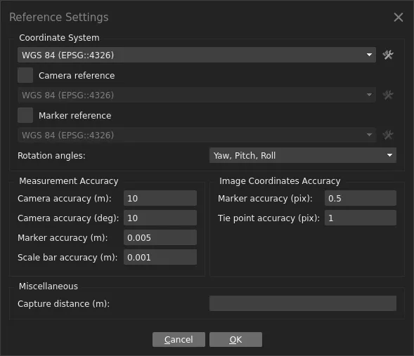
Marker accuracy is RMSEV2. The software weights the adjustment with it, then reports a fit that still does not include it.
| Quantity | Agisoft Metashape report | WebODM quality report |
|---|---|---|
| GSD | Survey Data: ground resolution | Overview: average GSD |
| Coverage and photos | Survey Data: coverage area, aligned images | Overview: area, reconstructed images |
| Overlap | Camera locations and image overlap figure | Survey Data overlap heatmap |
| Camera model | Calibrated values with uncertainties and residual plot | Camera parameters, per-band |
| Camera position error | Camera Locations table: X, Y, Z error | GPS/geolocation details, 3D errors |
| Control fit | Ground Control Points table: control RMSE | GCP errors section (when GCPs used) |
| Checkpoint error | Check Points rows in the same table | Absent unless checkpoints were declared |
Report vocabulary (American Society for Photogrammetry and Remote Sensing 2024): report RMSEH and RMSEV (RMSE3D if asked); Edition 2 drops the old 95 percent confidence reporting; 30 checkpoints is the minimum for a statistical claim, and Section 7.16.1 gives the wording for when you have fewer
\[\text{LoD} = 1.96 \sqrt{\sigma_{z1}^2 + \sigma_{z2}^2} \approx 2.8\,\sigma_z\]
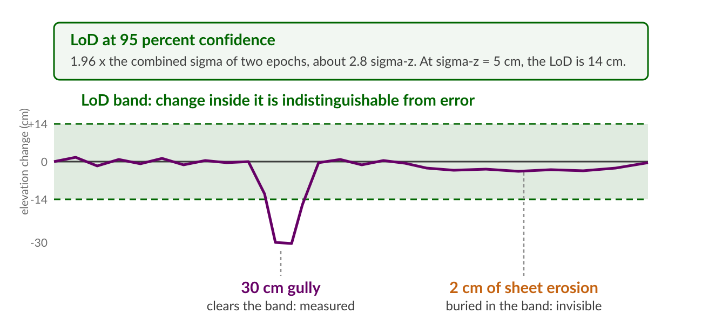
| Question | Binding constraint | Verdict at 3 cm GSD, 5 cm sigma-z |
|---|---|---|
| Count the trees | Detection in the orthomosaic | Easy; accuracy barely matters |
| Measure canopy height | Canopy and ground surfaces, not GSD: flying height 80 to 120 m showed no significant effect on tree height RMSE (1.8 to 3.2 m) (Grybas and Congalton 2022) | Expect meters of error regardless of pixel size |
| Detect a 30 cm rill or gully | LoD about 14 cm | Yes, cleanly |
| Quantify 2 cm sheet erosion | LoD, dominated by systematic error | No; needs sub-2 cm sigma-z, near-ground flights, and bias control |
Checkpoint: surveyed, withheld, judges the map; also called check point, validation point, independent test point
Direct georeferencing: camera positions from RTK or PPK doing the work of control; also called GNSS-aided or GCP-free
Level of detection (LoD): the smallest elevation change distinguishable from error at a stated confidence
Doming: broad systematic DEM deformation from the self-calibration ambiguity; also called bowling when inverted
RMSEH, RMSEV, RMSE3D: Edition 2’s reporting quantities, replacing RMSEx/RMSEy/RMSEz and the 95 percent statistics
Quadrature: accuracies add as the square root of summed squares; the product carries the checkpoint survey error
Assignment 3B: Validate the Lake Wheeler flight: establish the base coordinate three ways, evaluate the flight’s orthomosaic and DSM against the checkpoints you collected, and rule on what the flight can measure
Midterm 11/4: the control versus checkpoint distinction, the quadrature rule, and the LoD arithmetic are all fair game